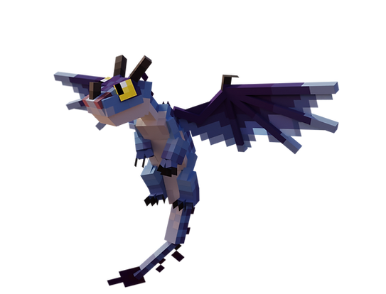
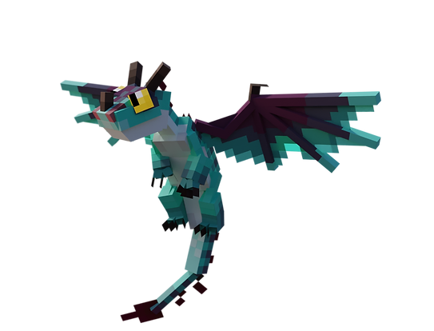
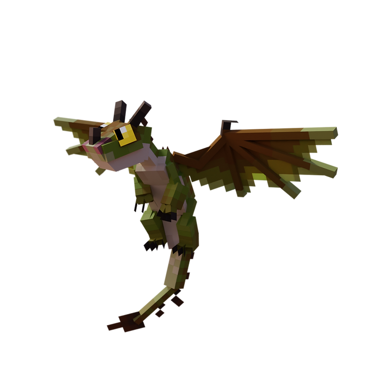
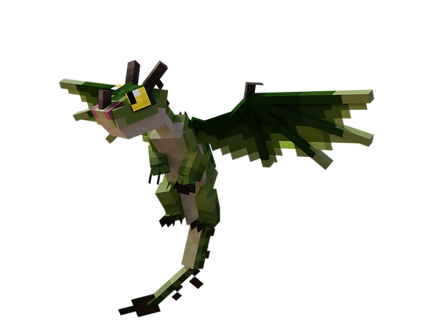
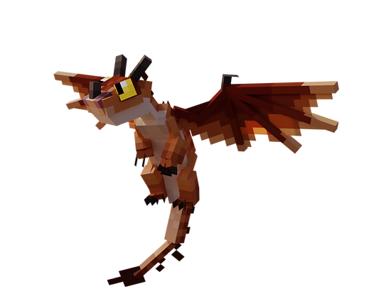
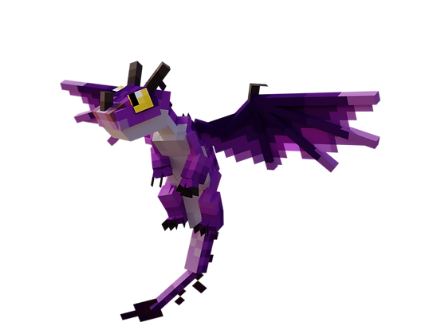
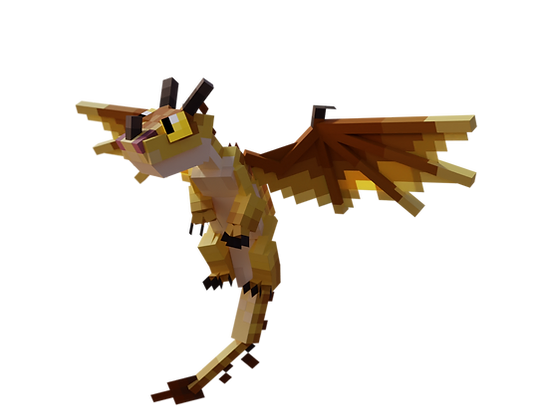
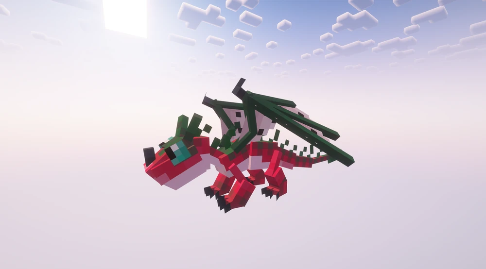

Terrible Terror
le compagnon de pocheDescription
§ 1Le plus petit, le plus accessible. Idéal pour un premier dragon.
Apprivoisable simplement en lui donnant à manger — pas de potion, pas de combat. Peut se percher sur l'épaule du joueur et procure des effets bénéfiques périodiques (Régénération, Force, Résistance, Vitesse, selon la variante).
Une vingtaine de variantes connues — parmi les plus diversifiées du codex.
Capacités
§ 2Flame Thrower
Petit lance-flammes (FireBreathSmallProjectile) — faisceau bouche → cible jusqu'à 6 blocs, particules FLAME, 2 par bloc, sizeHint 2.0→0.0. Plus court qu'un Monstrous Nightmare mais utile au sol.
Beneficial Effects — Buffs au cavalier
Quand un Terrible Terror est perché sur le joueur ou le suit, il distribue périodiquement des effets de potion bénéfiques (Régénération, Force, Résistance, Vitesse, etc., selon la variante).
Apprivoisement
§ 3Tier II — La main directe.
Nourriture : Saumon, morue ou poisson tropical.
Conditions : Aucune arme équipée. Pas de potion requise.
- Trouve un Terrible Terror (rivières, plages, jungles, forêts sombres).
- Retire arme.
- Tiens du saumon/morue/poisson tropical en main.
- Clic droit — le dragon mange (timer 40-120 ticks, mécanique consume différé S2).
- Au seuil de progression, l'apprivoisement réussit.
Reproduction
§ 4Habitat (2 groupes)
§ 5
A. Stony Shore, River, Beach.
B. Jungle, Bamboo Jungle, Dark Forest.
Variantes (8)
§ 6Chaque variante peut avoir un buff associé différent au cavalier perché.

Variant 1
Blar
Variante nommée — vert sombre

Variant 2
Sneaky
Variante nommée

Variant 3
TT
Variante de base

Variant 4
Sharpshot
Dragon de Tuffnut

Variant 5
Iggy
Dragon de Ruffnut

Variant 6
Pain
Dragon de Snotlout

Variant 7
Head
Variante nommée

Variant 8
DragonFruit
Variante nommée
Trivia
§ 7- Le plus petit dragon du codex — peut se percher sur l'épaule du joueur.
- Touche M (
keyDismountTerror) pour faire descendre un Terrible Terror perché. - Apprivoisement direct via
isItemStackForTaming(), bypass decanBeMounted(S2). - Mécanique consume différé : 40 à 120 ticks entre clic et effet (jauge progression).
- Bug fix S2 :
tameWithName()appelé dansonFinishConsuming()quandisPhaseTwo().
Commande /summon
§ 8/summon isleofberk:terrible_terror ~ ~ ~ {variant:1}
Variantes 1 à ~20 selon la liste exacte du wiki.